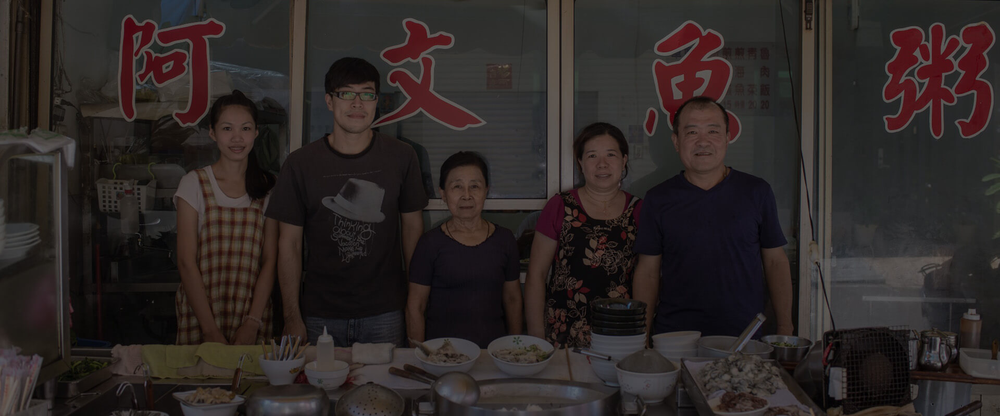
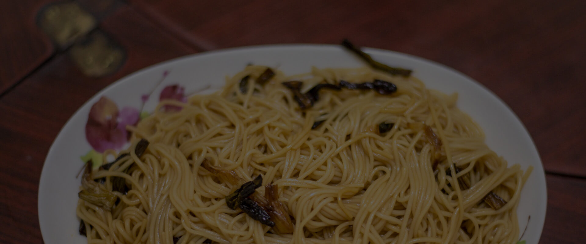
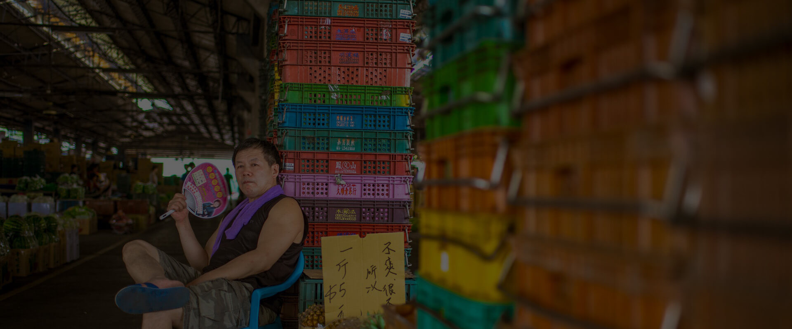

來自臺南傳統紡織業二代的葉皓宇，不走傳統安穩的路，反而踏入城市邊緣，將家族記憶裡一條條五彩繽紛的縫線，重新運用 ... more
三代人包含老、中、青，大家能撇開各自的生活因素在早上一起為同一件事情而付出、努力，在我眼裡看來這是件很動人的事情 ... more
這是一道相當極簡的料理，不單材料簡單，備料與作法也都很簡單！但越簡單的東西，所有細節都要仔細挑選，反而越不容易 ... more
嘉義市果菜市場於民國38年設立，原位於北興街，名稱為『嘉義市中央市場』而在光復後由嘉義市公所收回經營，並且成立 ... more
伯伯今年102歲，四川人。年輕時從軍，經歷過橫屍遍野的戰爭，來台後，民國46年正式以上士退休。伯伯配合度超高 ... more